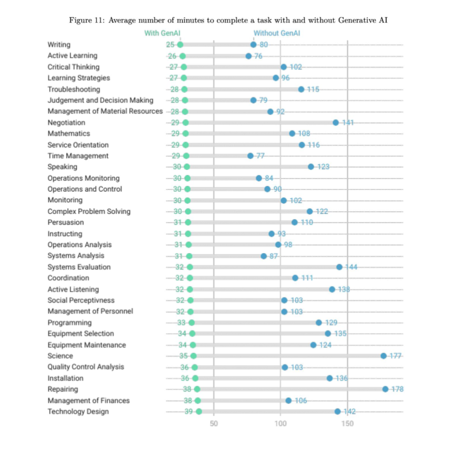

The short answer is no. The reason behind this is not necessarily because it's not possible. It has to do with the fact that we aren't willing to allow corporations to make that decision. An example of this was when the CEO of Duolingo suggested that he wanted to start the first full AI company which was not revieved well at all.

Expanding on the previous section AI should be seen to augment peoples abilities and make them better. We shoudn't see AI as something that will automate what humans can do. It has been shown even in entry level positions which is often the main group of concern. It showed a great increase in their skills to the point where they benefit their skills more with AI rather than without it.

AI is expected to increase productivity in many sectors. By automating repetitive tasks, AI allows workers to focus on more complex and creative aspects of their jobs. This will allow for more work to be done while also making the more tedious and repetitive tasks easier to deal with. This is shown throught the various fields and the time it takes to complete specific tasks with and with and without AI and the evidence is positive in every aspect with the help of AI.
